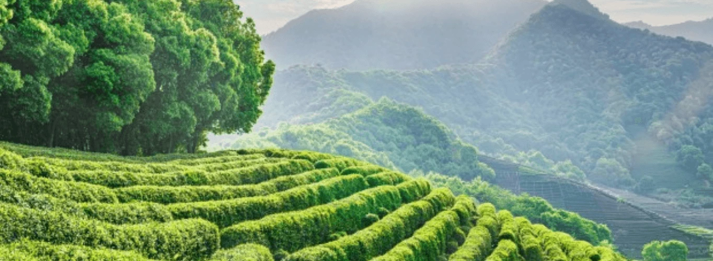
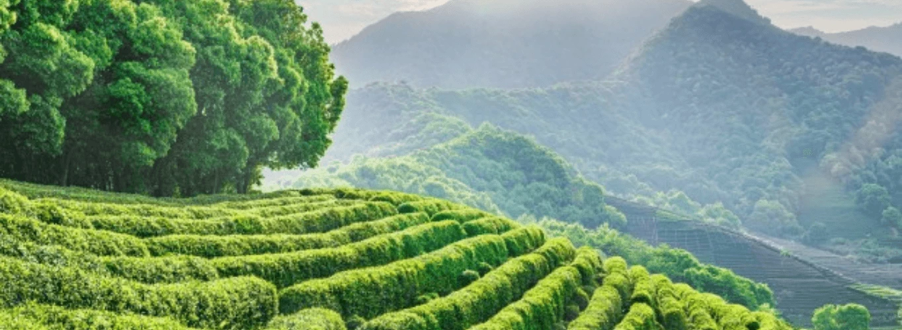
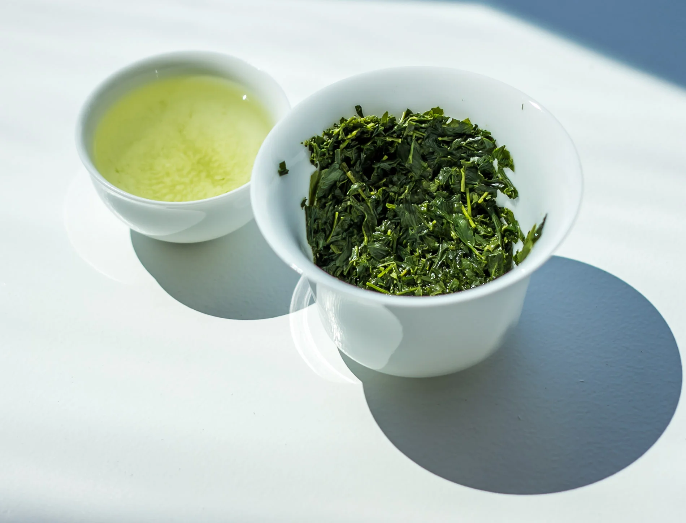
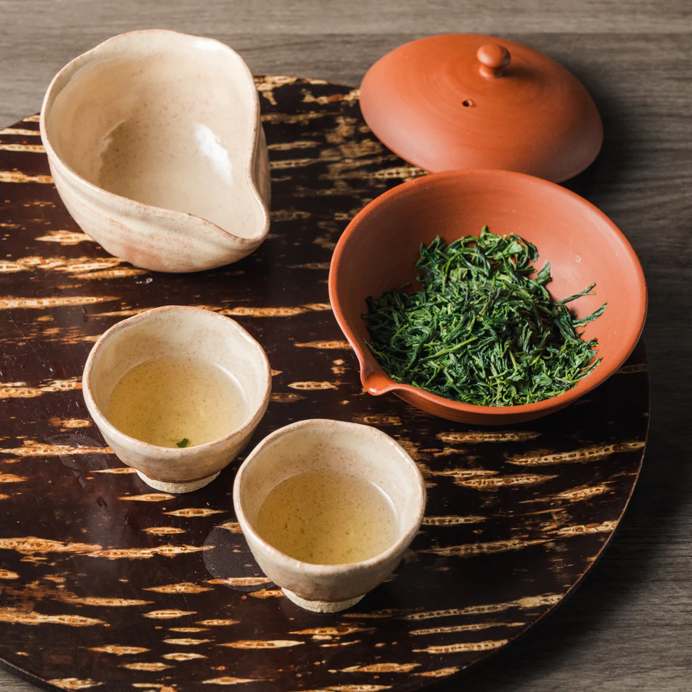
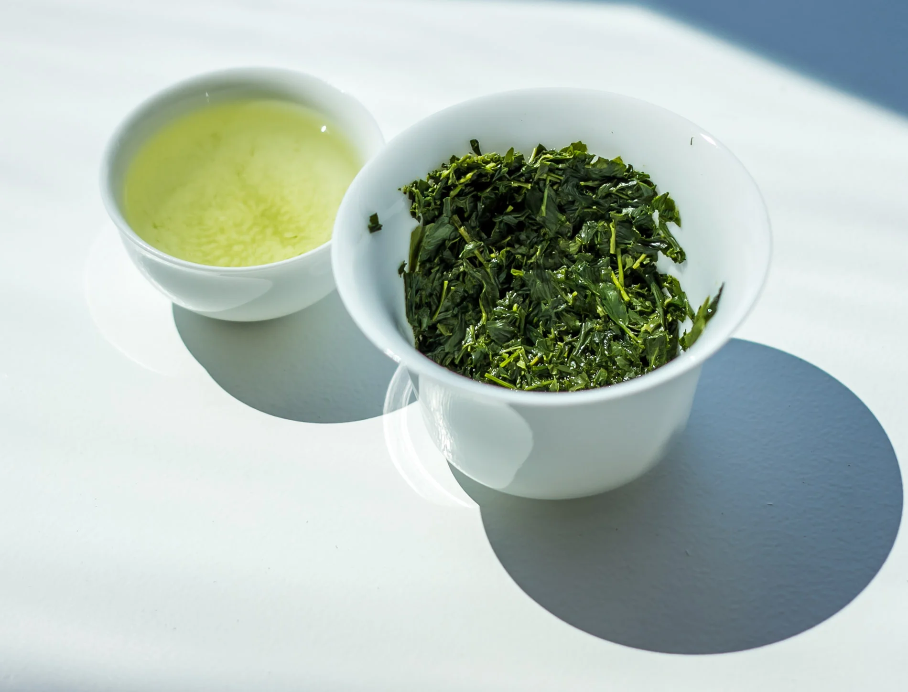
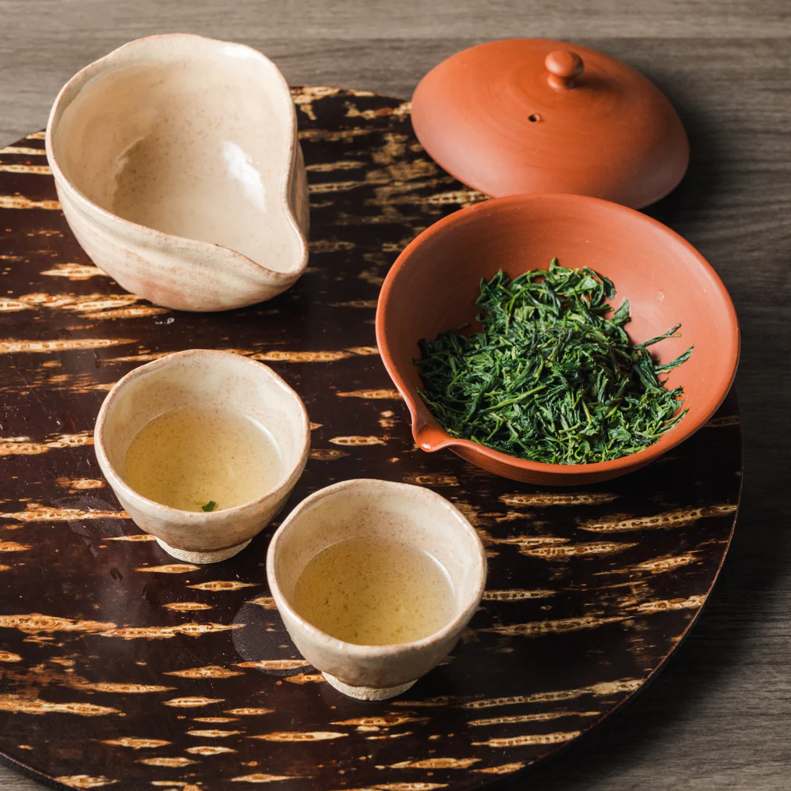

Gyokuro – Szmaragdowy Klejnot Japonii
Gyokuro to jedna z najszlachetniejszych i najdroższych herbat świata. Jej historia sięga 1835 roku, kiedy to Yamamoto Kahei z okolic Uji opracował metodę cieniowania krzewów.
Gyokuro to jedna z najszlachetniejszych i najdroższych herbat świata. Jej historia sięga 1835 roku, kiedy to Yamamoto Kahei z okolic Uji opracował metodę cieniowania krzewów.
Kluczem do smaku Gyokuro jest cieniowanie krzewów przez 20-30 dni przed zbiorem. Proces ten ogranicza nasłonecznienie do 5-10%, co drastycznie zmienia biochemię liścia.
Parzenie Gyokuro wymaga precyzji i niskiej temperatury wody (50-60°C).
| Cecha | Gyokuro | Sencha |
|---|---|---|
| Cieniowanie | 20-30 dni | Brak/kilka dni |
| Smak | Słodki, umami | Orzeźwiający |
 


